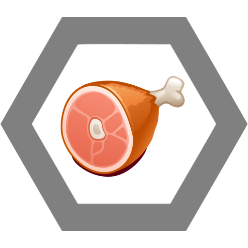

Jenda je mistrem neviditelnosti (ať už se jedná o tělesné rozměry či fyzickou přítomnost). Zaměřuje se spíše na obranu či únik místo útoku, který za něj zajišťují Hitlerjugend.

Dvoudimenzionální neviditelnost hubenosti
Pokud se Jenda natočí k protivníkovi bokem, stává se zcela neviditelným. Rotace torsa tak způsobuje u protivníka epileptický záchvat. Stun trvá po dobu rotace.
Bílej jezdec
Jenda unikne z boje pomocí motorky a na své místo povolá 88 árijských mužů, kteří zneškodní nepřítele. Lze aktivovat pouze v letním období. +1 dmg za každý bílý objekt v okolí 10 m a za každý najetý km +2 hp.
Šok prehistorickými fotkami
Jenda ukáže protivníkovi starou průkazovou fotografii. Protivník propadne absolutnímu zmatení, jelikož se ve fotografii snaží najít podobu se současným Jendou. Stun 10 sec. Bonus: Ve výjimečných případech dostane protivník při pohledu na Jendův účes nutkání vyhladit nějakou rasu. Za každý úhlový stupeň o který protivník zvedne pravici +1 hp.
Nie, radšej spánek
Díky své schopnosti se zcela vyvarovat pozornosti ostatních je 50% šance, že veškeré Jendovy absence zůstanou bez povšimnutí. Za každou zameškanou vyučovací hodinu se regeneruje o 20%.

Ulti
Regenerace obžerstvím. Pokud Jenda klesne pod 20% max hp, automaticky spořádá nejbližší jedlý objekt ve vzdálenosti 10 m a regeneruje se o 30%. Obsahuje-li tento objekt maso, regeneruje se o 50%.